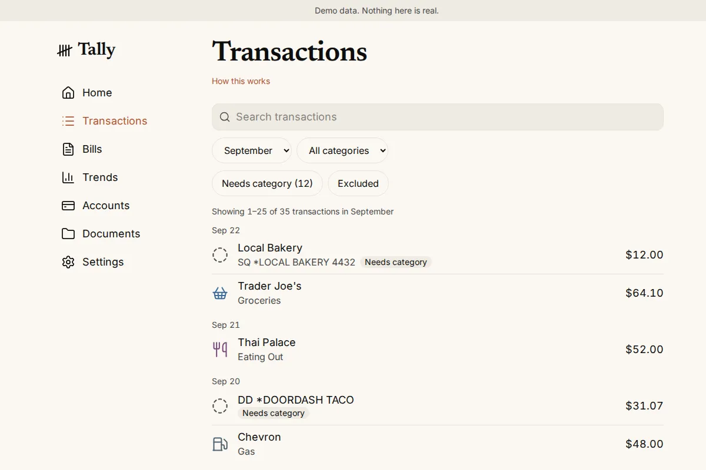

Kazon
Wilson
Software, sound, and things worth exploring.
I build software, design websites, and mix and master music.

Currently building

In development · public demo
Tally

In development · playable demo build
Kaillera Next
thesuperhuman.us